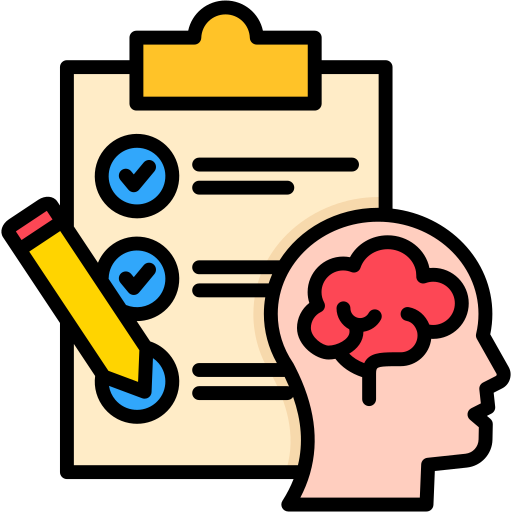
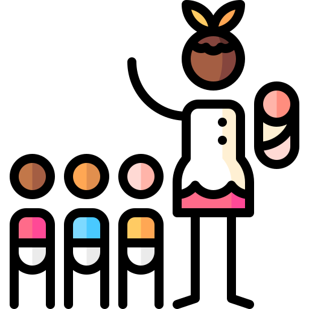

قسم أصول التربية
قسم المناهج وطرق التدريس





يمثل هذا القسم الأساس الفكري والنظري للعملية التربوية. يدرس الطالب فيه العلاقة الديناميكية بين التربية وكل من الفلسفة، التاريخ، المجتمع، والاقتصاد. يتناول نشأة النظم التعليمية وتطورها عبر العصور، وكيف تؤثر الأيديولوجيات المختلفة على صياغة الأهداف التعليمية، بالإضافة إلى قضايا العدالة والمساواة في التعليم.
الفهم العميق: يمنحك نظرة شاملة وفهمًا نقديًا لدور التربية في بناء المجتمعات وحل مشكلاتها.
التأثير على السياسات: الخريجون مؤهلون للعمل في مراكز صنع القرار ووضع السياسات التربوية والتخطيط التعليمي على المستوى الوطني.
المرونة الفكرية: يطور لديك مهارات التحليل الفلسفي والنقدي للقضايا التربوية المعاصرة.
هو القلب العملي للتعليم. يركز على كيفية تحويل الأهداف التربوية العامة إلى محتوى دراسي منظم وخطط تعليمية فعالة. يدرس الطالب مبادئ تصميم المنهج، تنظيم محتواه، آليات تنفيذه (طرق التدريس المختلفة مثل التعلم التعاوني، والاستقصاء)، وأدوات تقويم العملية التعليمية والتحصيل الدراسي للطلاب بدقة وموضوعية.
التأثير المباشر: يمكنك المساهمة مباشرة في تطوير جودة التعليم من خلال تصميم مواد دراسية حديثة ومبتكرة.
المهارات المزدوجة: يجمع بين المعرفة التخصصية (المادة التي تدرسها) والمهارات البيداغوجية (فن التدريس)، مما يجعلك معلمًا أكثر كفاءة.
فرص التطوير: العمل كـ مطوّر مناهج، مستشار تدريب للمعلمين، أو مشرف تربوي بعد خبرة في التدريس
يطبق هذا القسم مبادئ علم النفس لدعم العملية التعليمية والتعلم الفعّال. يدرس الطالب نظريات التعلم المختلفة (السلوكية، المعرفية، الإنسانية)، خصائص نمو الطلاب في المراحل العمرية المختلفة (المعرفي والانفعالي والاجتماعي)، إدارة الفصول الدراسية، وقياس وتقويم القدرات والذكاء والتحصيل الدراسي. كما يهتم بفهم الدافعية وعلاج صعوبات التعلم.
فهم المتعلم: يمكنك فهم كيف يفكر الطلاب ويتعلمون ويواجهون التحديات، مما يمكّنك من تلبية احتياجاتهم الفردية.
الدعم النفسي: يفتح مجالات للعمل كـ أخصائي نفسي مدرسي، وتقديم الإرشاد الأكاديمي والنفسي للطلاب وأولياء الأمور.
المهارات التحليلية: اكتساب مهارات متقدمة في بناء الاختبارات والمقاييس النفسية وتحليل النتائج.
يتخصص في دمج التقنيات الحديثة بكافة أشكالها (التعليم الإلكتروني، الوسائط المتعددة، الذكاء الاصطناعي، الواقع الافتراضي) في العملية التعليمية لتسهيل التعلم وتحسين فاعليته. يتعلم الطالب كيفية تحليل المشكلات التعليمية وتصميم وإنتاج المصادر التعليمية الرقمية وإدارتها، والتعامل مع منصات التعلم الإلكتروني (LMS).
مواكب للعصر: هو تخصص المستقبل في ظل التحول الرقمي، مما يجعلك مطلوبًا في سوق العمل بشكل كبير.
المهارات التقنية الإبداعية: يجمع بين مهارات التربية ومهارات التصميم والبرمجة وإنتاج المحتوى الرقمي (مصمم تعليمي).
تنوع الوظائف: العمل ليس فقط في المدارس، بل في شركات التدريب، المؤسسات الإعلامية، ومراكز التعلم عن بعد.
يُعنى بإعداد وتأهيل الكوادر المتخصصة لرعاية وتربية أطفال مرحلة الطفولة المبكرة (من 3 إلى 6 سنوات). يتم التركيز على فهم سيكولوجية الطفل في هذه المرحلة الحساسة، وتطوير الأنشطة التي تحفز النمو الشامل (اللغوي، الحركي، الحسي، الاجتماعي، الوجداني) من خلال اللعب والخبرات المباشرة. يدرس الطالب تصميم الأركان التعليمية وتخطيط الأنشطة المناسبة لهذه الفئة العمرية.
الأثر العميق: العمل مع الأطفال في المرحلة التأسيسية التي تشكل شخصيتهم وقدراتهم المستقبلية.
المهارات العملية: اكتساب مهارات الإبداع في تصميم الأنشطة والتعامل التربوي مع سلوكيات الأطفال.
الطلب المتزايد: هناك طلب مستمر ومتزايد على معلمات رياض الأطفال المؤهلات تربويًا ونفسيًا